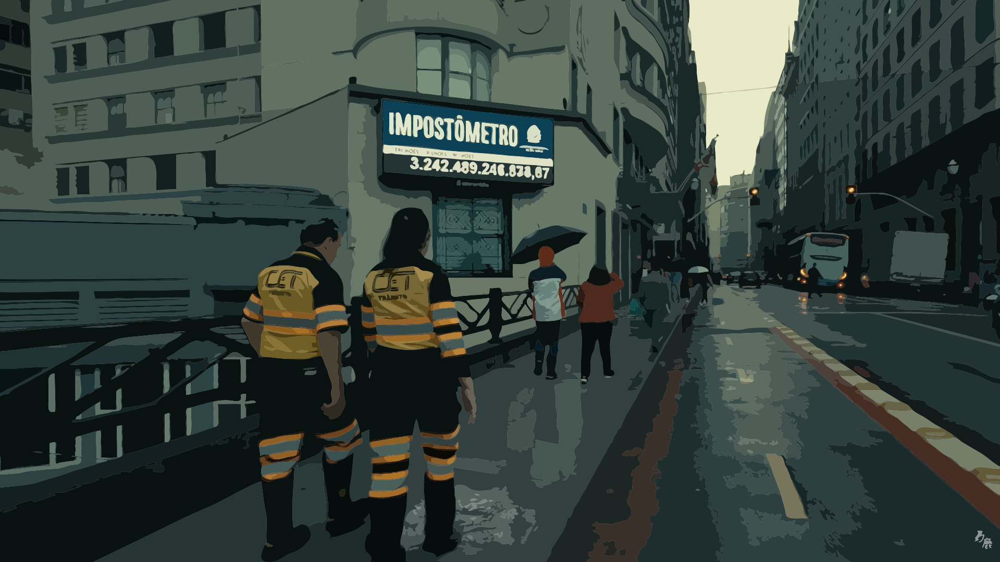
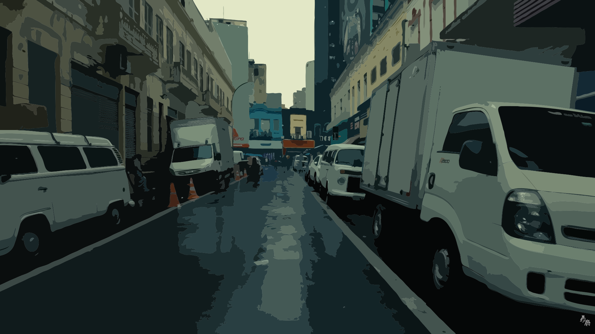
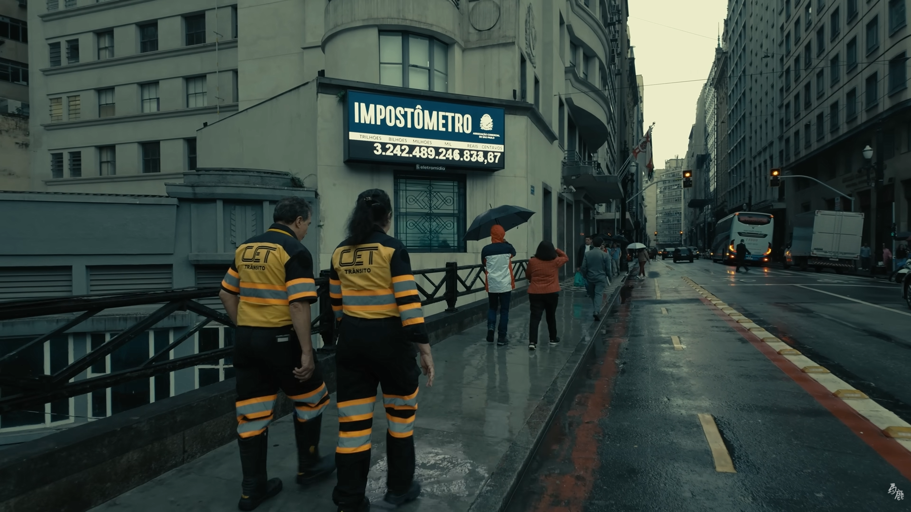
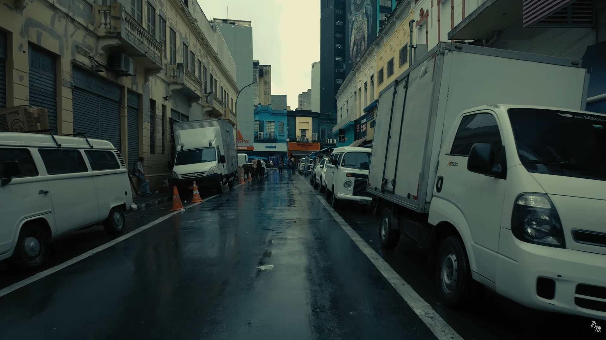

Cidade
São Paulo
Um recorte da cidade sob uma perspectiva estética e urbana, explorando contraste, densidade visual e identidade caótica.

Centro urbano
Caos visual
Perspectiva urbana
Densidade visual| Cidade | Áreas verdes 🌳 | Organização urbana | Poluição visual | Sensação estética |
|---|---|---|---|---|
| São Paulo | Baixa | Média | Alta | Cansativa |
| Curitiba | Alta | Alta | Baixa | Agradável |
| Vancouver | Muito alta | Alta | Baixa | Bonita |
| Tóquio | Média | Alta | Média | Organizada |